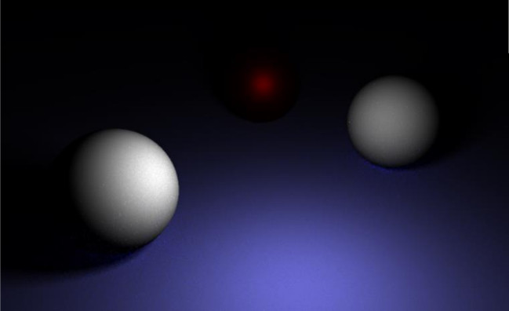
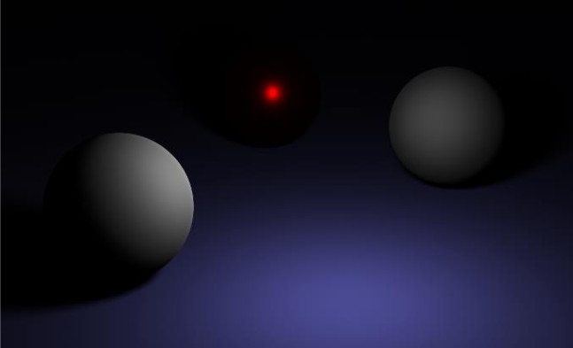
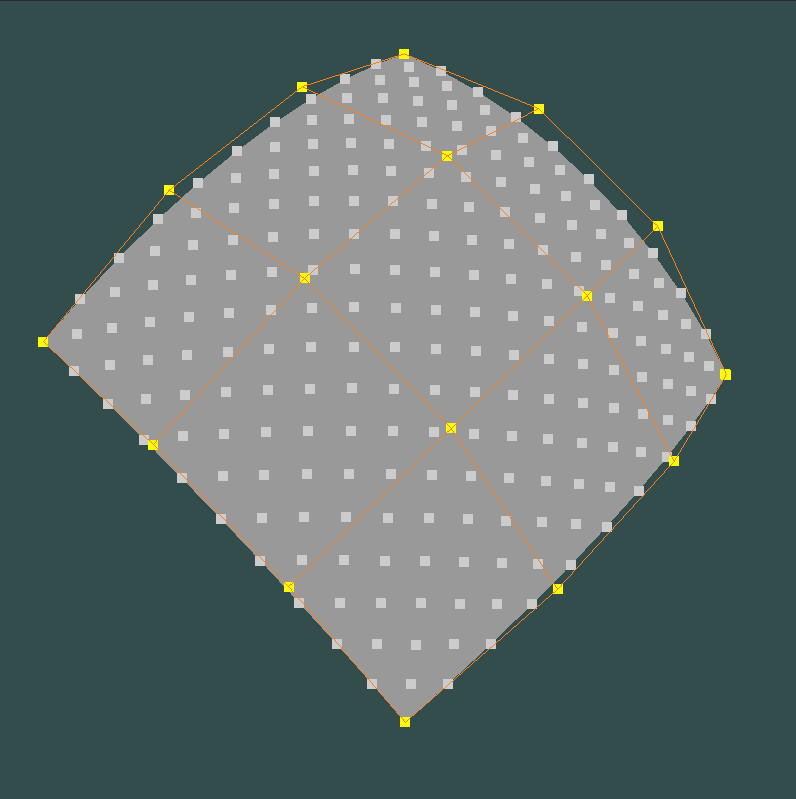
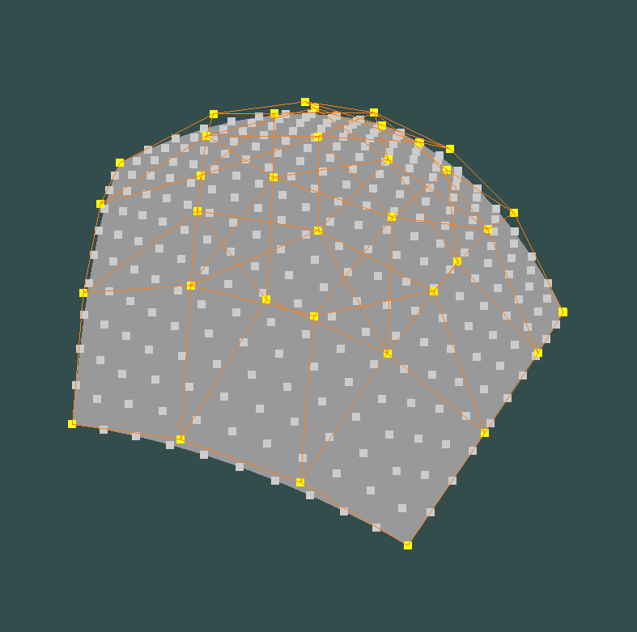
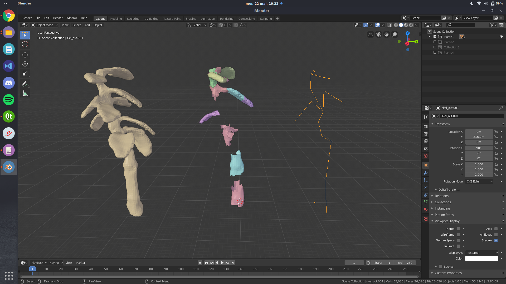
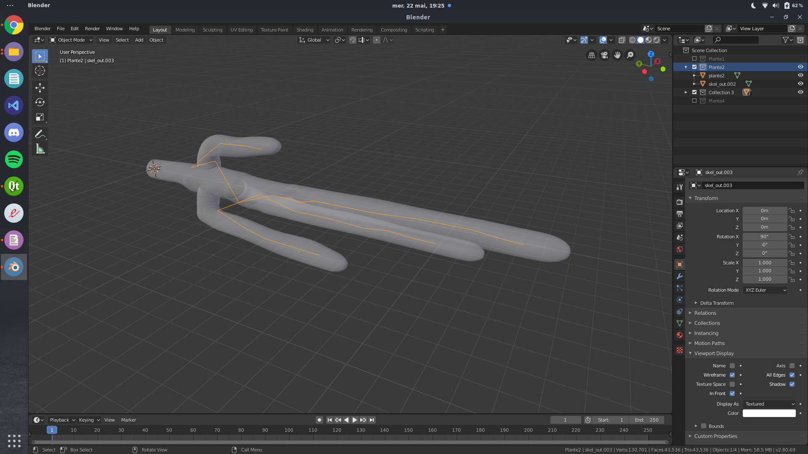

Programming projects
I listed below the main projects I worked on. Some of them are from university assignments, the other are personnal projects. A GitHub repository is linked when it is possible, so feel free to dig in the code.
Real Time Raytracing
This is my final year project from late 2019. Over the semester I worked on implementing a raytracer in real-time using the GPU. I used WebGL and GLSL shader to create the renderer.

This my renderer

And this is a Blender scene with the closest parameters possible
Screen Space Directional Occlusion
This is what I worked on during my third year internship at Hapticmedia. The Screen Space Directional Occlusion (SSDO) is a type of Screen Space Ambiant Occlusion.Original paper: Approximating Dynamic Global Illumination in Image Space, T. Ritschel, T. Grosch, H-P. Seidel
Screen Space Ambiant Occlusion
SSDO: 1st pass
My work
This my renderer
And this is a Blender scene with the closest parameters possible
n-sided Bezier Patches
This is what I worked on during my third year internship at Hapticmedia. The Screen Space Directional Occlusion (SSDO) is a type of Screen Space Ambiant Occlusion.Original paper: Approximating Dynamic Global Illumination in Image Space, T. Ritschel, T. Grosch, H-P. Seidel
Screen Space Ambiant Occlusion
SSDO: 1st pass
My work

An order 3 3-sided patch

An order 3 4-sided patch

An order 3 5-sided patch
Automated Mesh Segmentation
This is what I worked on during my third year internship at Hapticmedia. The Screen Space Directional Occlusion (SSDO) is a type of Screen Space Ambiant Occlusion.Original paper: Approximating Dynamic Global Illumination in Image Space, T. Ritschel, T. Grosch, H-P. Seidel
Screen Space Ambiant Occlusion
SSDO: 1st pass
My work

An order 3 3-sided patch

An order 3 4-sided patch
An order 3 5-sided patch